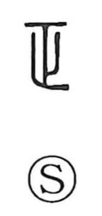

正

Uncategorized
Kun: tadashii, tadasu, masa, masani | On: sei, shou
correct ・ right ・ to correct ・ proper
Explanation
Shirakawa sees 正 as a compound: the footstep graph 止—whose ancient form matches 之 and means to go or advance—set against the image of a walled city. In early forms it thus depicts a person moving upon a fortified place, yielding the sense of attacking and subduing. From this, 正 functioned as the original graph of 征, “to campaign and conquer,” while 政 named the method of rule over the subdued—exerting strong pressure and exacting levies. Order imposed in this way was regarded as proper and just (正当, 正義), and from that valuation the character came to mean “correct” and “to rectify,” as reflected also in compounds such as 純正, “pure, unmixed.”